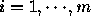
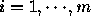
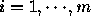

Modular Integration for Low-level and High-level Vision Problems
in a Multiresolution Framework
Thesis
Submitted in Partial Fulfillment of the Requirements
of the degree of
Doctor of Philosophy
by K. Sunil Kumar
Thesis Advisors Professor U. B. Desai Professor P. G. Poonacha
DEPARTMENT OF ELECTRICAL ENGINEERING INDIAN INSTITUTE OF TECHNOLOGY, BOMBAY 1996
Approval Sheet
Thesis entitled : Modular Integration for Low-level and High-level Vision Problems in a Multiresolution Framework
by K. Sunil Kumar is approved for the
degree of Doctor of Philosophy. Examiners
Vision is a hard task to automate, especially because it come to humans so
easily that it is often taken for granted. In this thesis, we develop a
framework based on modular integration and
multiresolution for solving
computer vision tasks. The developed framework is based on the following
considerations: (i) it should represent the functioning of the human
visual system, (ii) the framework should be
sufficiently general so as to
be applicable to any vision task, (iii) should be efficient in terms of
the correctness of the solution and the speed of computation.
In this thesis, we develop a general framework to
solve computer vision
tasks. The development of the generalized framework is based on modular
integration and multiresolution, these concepts are motivated by the
following observations: (i) the belief that the human visual system very
much works in a multiresolution framework, (ii)almost all the computer
vision problems are ill-posed [1] in the
sense of Hadamard, and hence modules working individually
without interaction cannot come out with the required solution because of
lack of sufficient constraints, (iii) the human visual system which rarely
gets fooled by illusions, uses module integration to overcome visual
illusions which can occur when the assumptions used by the visual system
are wrong. The modular interaction in fact builds robustness in the form of
the mistakes made by one sensory module being corrected by another module,
(iv) we get an efficient representation of data which can be used with
effect to reduce the computational complexity.
The developed generalized framework for solving vision task is validated
by applying it to both low-level and high-level vision tasks.
Specifically, we develop schemes based on modular integration and
multiresolution framework to solve (i) the color image restoration
problem, (ii) the problem of disparity estimation from stereo pair, both
being classified as low-level vision tasks and (iii)
the vision task of
image interpretation, which comes under the category, high-level
vision. In the process we obtain new algorithms
for the three problems.
The main contribution of the thesis is the development of a generalized
framework for solving vision task and demonstrating its applicability for
solving vision tasks. The other contributions which arise when the
proposed framework is applied to the specific problems are (i) integration
of the parameter estimation module and the restoration module for color
image restoration, (ii) a new algorithm for disparity computation from a
given pair of stereo images exploiting intra-module integration and
multiresolution analysis. and (iii) new algorithm for the problem of joint
segmentation and image interpretation.
Keywords: Modular Integration, Multiresolution, Color Image
Restoration, Disparity Estimation from Stereo, Image Interpretation, Scene
Interpretation, Parameter Estimation, Energy Minimization, Segmentation.
Low-level, High-level Vision,
I paint objects as I think them, not as I see them - Pablo Picasso
Vision comes to human so naturally that the processing capability of
the human visual system is often taken for
granted. We neither realize its
complexity nor the difficulty in automating it and this is one of the
reasons why research in the area of computer vision took off late.
Computer vision is the science that develops theoretical and algorithmic
basis by which useful information about the world can be extracted and
analyzed automatically from an observed image or a sequence of images,
by computations made on special or general purpose computers. The
information derived from the image or a sequence of images could relate to
three dimensional description of an unknown object, motion or spatial
property of the object or calculation of any other attribute of interest.
Problems in computer vision essentially revolve around the concept of
providing vision capability of the human eye to the computer, albeit in a
very small way. Often, one is trying to mimic the functioning of the eye
or the human visual system (HVS) in general. Most of the theoretical and
algorithmic basis for computer vision is motivated by the way the HVS
functions because of the undisputed fact that, HVS is, undoubtedly the
best vision system and in addition an excellent image processor. It is
robust in the sense that it rarely gets fooled; this is because the
HVS makes use of other sources of information, which help in
disambiguating illusions. Problems in computer vision become hard to
solve, because, one cannot claim complete knowledge regarding the
functioning of the human visual system, though, vision is one of the
widely used senses by a human. Studies in
psychophysics, physiology, and
experiments carried out on the visual system of primates help in
understanding the HVS. These studies and experiments form a basis for
solving vision problems.
Computer vision is the enterprise of automating and integrating a wide
range of processes and representations useful for vision
perception.
Though there is no strict demarcation between vision problems in terms of
classification, we can broadly categorize vision problems into (i)
low-level vision problems and (ii)
high-level vision problems. Low-level
vision problems are essentially image-image vision tasks, for example edge
detection, segmentation, optical
flow estimation and depth estimation from
stereo pair to name a few, and high-level vision problems are image-scene
vision tasks, where the objective is essentially to develop an
understanding of the 3D scene contents contained in the 2D image. The tasks of
image recognition, scene
interpretation or
understanding, navigation can be categorized as high-level
vision.
The main task of computer vision scientist is
to develop the sense of vision using computers. This would essentially
imply that we should be able to solve vision tasks effectively in terms of
the correctness of the solution and efficiently in terms of the
computational speed complexity. To
achieve this we take ``hints'' from the HVS and in a way try to
simulate the functioning of the eye. This understanding,
is useful in solving vision tasks along the lines of the functioning of
the HVS.
Experiments from psychophysics and physiology of the visual system
[2] motivate us to look at the problem of solving the vision
task by breaking it into m smaller tasks (called
subtasks or
modules) , , , , . Each subtask or module
interacts with other modules -- this is referred to as
modular integration. Integration or
synergism of modules is a technique
where various modules get together to perform the given task better than
when working individually with only feedforward
interaction. Figure
1.1 shows the vision task at any given resolution
being divided into three subtasks , and , for example
in case of the vision task of depth extraction from
stereo images the
vision task could be thought of as being made up of three subtasks, namely
(i) the task of salient feature extraction for
each of the stereo pair,
(ii) the task of matching the features and (iii) the task of
interpolating
the obtained disparity map. Each module or subtask
has associated
with it a set of input variables and possibly a set of output variables.
More often the output may be a single variable. The relation between the
output and input variables is modeled and the problem essentially becomes
one of estimating the output variable given the input variables under
some constraints. Usually the estimation problem becomes an
optimization problem which would involve the construction of an energy
function which when minimized would return the
optimal output variable. The
energy function of one module could contain output variables of other
modules (which form the subtask of a bigger vision task) as its input
variables. The estimation problem is solved for each module ,  to obtain the optimal attribute
for each module. Depending on the
vision task, one or more of these attributes may be of interest.
In
addition, experimental results show that a multi-frequency
channel
decomposition seems to be taking place in the human visual cortex
[3,4]. Experiments based on adaptation techniques
show that at
some stage in the HVS, the visual information in different frequency bands
is processed separately. It is also experimentally found that the retina
image seems to be decomposed into several frequency bands having
approximately the same bandwidth on an octave scale. These experimental
results motivate us to look at the vision task in a multiresolution
framework. This hierarchical processing
approach is operational in the HVS,
in the sense that the processing proceeds from a coarse descriptive level
to levels of increasing refinement, popularly called the coarse to
fine
strategy [4]. One of the most significant benefits
of this is the resultant computational savings [5].
Figure 1.1: Modular
integration is along the y-axis and the multiresolution is seen along
the x-axis. The subtasks are shown as dotted rectangles and the vision
task by solid rectangles. The largest solid rectangle is the vision
task to be solved.
The main goal of this thesis is to develop a framework to
tackle problems in computer vision such that the framework is efficient in
terms of both correctness of the solution and the total time taken to
obtain the solution. The motivation for the development of such a
framework comes from the understanding of the functioning of the HVS. We
use two aspects of the HVS, namely (i) modular integration and (ii) multiresolution to develop a
general framework useful for solving vision
tasks. We formulate the framework and validate the formulation by applying
it to problems of color image restoration,
stereo vision and image
interpretation. In this process, we obtain new
algorithms for the three problems.
The thesis is divided into 7 chapters. In Chapter we
describe relevant concepts and material that will be useful while reading
the other chapters. Chapter develops the generalized
framework for solving low-level and high-level vision tasks. We validate
the applicability and usefulness of the proposed generalized framework by
applying it to solve low-level tasks of color image restoration and
disparity estimation, and the high-level vision task of image
interpretation. The low-level vision task of color image
restoration in the generalized framework is developed in Chapter
and vision task of disparity estimation from stereo pair
in Chapter . Chapter addr
esses the
high-level vision task of image interpretation in the developed
generalized framework. By and large the presentation in each chapter is
self contained, in the sense we introduce the problem, cite the available
literature, formulate the problem in the proposed framework and validate
the correctness and usefulness of the proposed framework through
experimental results. We conclude and suggest issues that can be taken up
as extensions of this work at the end of each chapter. Overall
conclusions and extensions of this work are presented in Chapter
.
The main contribution and hence the theme of this thesis is to develop a
generalized framework to solve vision tasks. The main criterion for
developing this framework is twofold (i) accuracy of the obtained result
and (ii) reduction in computational complexity. The concepts that go into the formulation of the vision task
are motivated by the functioning of the HVS. In this thesis, the concepts
that are embedded into the development of a framework for solving vision
tasks are (i) modular integration and (ii) multiresolution.
The proposed framework can be used for solving any vision task, the
main requirement would be the ability to break the given vision task into
smaller tasks and understand the interaction between these smaller vision
tasks. For example, for the estimation of optical flow from temporal
images [6] we recognize that the vision task of optical
flow estimation would essentially comprise of three
smaller tasks: (i) feature extraction task, (ii)
task of optical flow estimation which incorporates the motion or optical
flow constraints and (iii) interpolation of the
sparse optical flow estimates.
The main
contribution of this thesis are:
development of a new generalized framework to solve low-level
and high-level vision tasks
formulation of low-level vision task like color image
restoration and disparity estimation from stereo images and high-level
vision task of scene interpretation in the proposed framework by
identifying the subtasks and also the variables involved in
integration of modules
New faster algorithms for the three problems emanating from the use
of the proposed generalized framework
The application of the generalized framework to the three problems
addressed in this thesis results in the following contributions
Color Image Restoration
identifying the subtasks of parameter estimation and image
restoration to solve the problem of color image restoration
development of a parameter estimation and image restoration algorithm
in the proposed framework of modular integration and multiresolution
As a byproduct we identify the transformation required to pass variables
of interest from coarser to finer resolutions in general and deriving the
behavior of degradation model over scales in
particular
Disparity Estimation using Stereo Images
construction of a new energy function which incorporates
information regarding discontinuities for the stereo matching module
use of precomputed feature map, which come as a byproduct of the
multiresolution scheme in the algorithm
integration model which is a combination of both strong and weak
integration schemes
developing the disparity estimation algorithm in the proposed
framework of integration and multiresolution
Joint Segmentation and Image Interpretation
integration of segmentation and interpretation modules in a
multiresolution framework
incorporation of a no-interpretation label to aid the
proposed scheme of joint segmentation and image interpretation
developing an algorithm for scene interpretation in the proposed
generalized framework of modular integration and multiresolution
D. C. Van Essen, C. H. Anderson, and D. J. Felleman,
``Information processing in the primate visual system: an
integrated systems perspective'',
Science, vol. 255, pp. 419--423, 1992.
S. G. Mallat,
``Multifrequency channel decompositions of images and wavelet
models'',
IEEE Tran. Acoustics, Speech and Signal Processing, vol. 37,
pp. 2091--2110, 1989.
K. Sunil Kumar and U. B. Desai,
``A multiresolution approach to integrated optical flow
computation'',
in International Conference on Image Processing and its
Applications, 1995.
 by breaking it into m smaller tasks (called
subtasks or
modules) , ,
by breaking it into m smaller tasks (called
subtasks or
modules) , ,  , , . Each subtask or module
, , . Each subtask or module
 interacts with other modules -- this is referred to as
modular integration. Integration or
synergism of modules is a technique
where various modules get together to perform the given task better than
when working individually with only feedforward
interaction. Figure
1.1 shows the vision task
interacts with other modules -- this is referred to as
modular integration. Integration or
synergism of modules is a technique
where various modules get together to perform the given task better than
when working individually with only feedforward
interaction. Figure
1.1 shows the vision task  at any given resolution
being divided into three subtasks ,
at any given resolution
being divided into three subtasks ,  and , for example
in case of the vision task of depth extraction from
stereo images the
vision task could be thought of as being made up of three subtasks, namely
(i) the task of salient feature extraction for
each of the stereo pair,
(ii) the task of matching the features and (iii) the task of
interpolating
the obtained disparity map . Each module or subtask
and , for example
in case of the vision task of depth extraction from
stereo images the
vision task could be thought of as being made up of three subtasks, namely
(i) the task of salient feature extraction for
each of the stereo pair,
(ii) the task of matching the features and (iii) the task of
interpolating
the obtained disparity map . Each module or subtask
 has associated
with it a set of input variables and possibly a set of output variables.
More often the output may be a single variable. The relation between the
output and input variables is modeled and the problem essentially becomes
one of estimating the output variable given the input variables under
some constraints. Usually the estimation problem becomes an
optimization problem which would involve the construction of an energy
function which when minimized would return the
optimal output variable. The
energy function of one module could contain output variables of other
modules (which form the subtask of a bigger vision task) as its input
variables. The estimation problem is solved for each module
has associated
with it a set of input variables and possibly a set of output variables.
More often the output may be a single variable. The relation between the
output and input variables is modeled and the problem essentially becomes
one of estimating the output variable given the input variables under
some constraints. Usually the estimation problem becomes an
optimization problem which would involve the construction of an energy
function which when minimized would return the
optimal output variable. The
energy function of one module could contain output variables of other
modules (which form the subtask of a bigger vision task) as its input
variables. The estimation problem is solved for each module  ,  to obtain the optimal attribute
for each module. Depending on the
vision task, one or more of these attributes may be of interest.
,  to obtain the optimal attribute
for each module. Depending on the
vision task, one or more of these attributes may be of interest.